#2443 Spiel mir das Lied vom Tod
Alternativ: Once Upon a Time in the West (Englischer Titel)
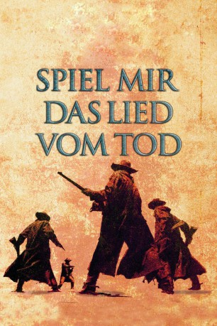 
 IMDB-Wertung: 8.5 / 10
IMDB-Wertung: 8.5 / 10  IMDB-TOP-Platzierung: 37
IMDB-TOP-Platzierung: 37  Metascore: 80
Metascore: 80 
Der skrupellose Eisenbahnunternehmer Morton will entlang einer Eisenbahnstrecke zum Pazifik einen neuen Bahnhof bauen. Dafür engagiert er den Farmer McBain, der für ihn die Drecksarbeit erledigen soll. Falls er es nicht in der vorgegebenen Zeit schaffen sollte, wird Morton dessen kompletter Besitz mitsamt der Farm zugesprochen. Einen Tag, bevor McBains Ehefrau Jill, an der Farm ankommt, werden McBain und seine drei Kinder von dem Killer Frank erschossen. Jill, die ihren Mann kaum kannte, muss nun sein Erbe antreten und die Bahnstation fertig bauen. Zunächst glauben alle, dass Cheyenne der Mörder des Farmbesitzers ist, doch ein geheimnisvoller Mundharmonikaspieler, der in der Stadt auftaucht, bringt Licht in das Dunkel. Während er mit der Hilfe Cheyennes Jill hilft, den Bahnhof zu vollenden, führt ihn die Suche nach dem wahren Mörder in seine eigene Vergangenheit.
Jahr: 1968
Dauer: 175 Minuten
FSK: 16
Land: Italien Studio: Euro International FilmsTonspuren: DD5.1 - ,
Untertitel: Deutsch,
Auflösung: 1080p (1920x816) Größe: 12697 MB
Genre: Western
Regisseur:  Sergio Leone
Sergio Leone
Drehbuch: Sergio Donati, Sergio Leone, Dario Argento, Bernardo Bertolucci, Sergio Leone
Soundtrack: Ennio Morricone
Darsteller:
- 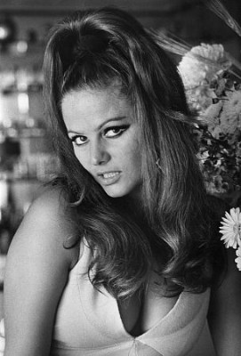 Claudia Cardinale als Jill McBain
- 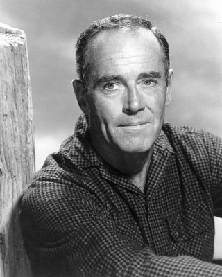 Henry Fonda als Frank
- 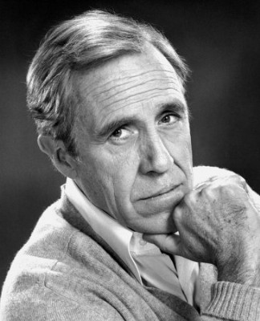 Jason Robards als Cheyenne
- 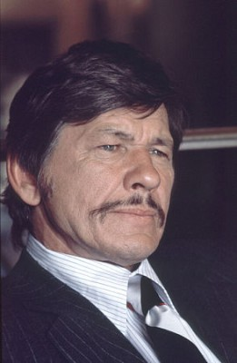 Charles Bronson als Harmonica
- 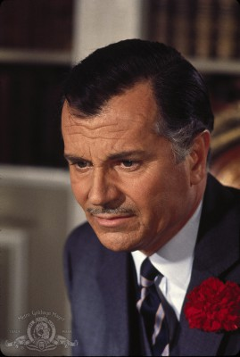 Gabriele Ferzetti als Morton - Railroad Baron
- 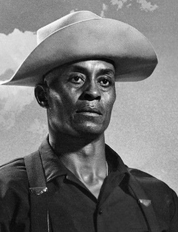 Woody Strode als Stony - Member of Frank's Gang
- 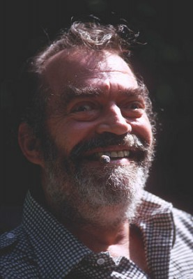 Jack Elam als Snaky - Member of Frank's Gang
- 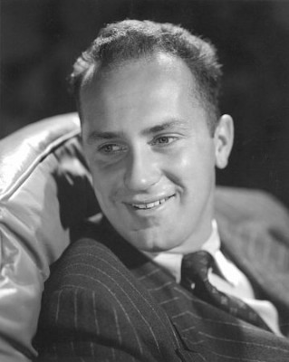 Keenan Wynn als Sheriff - Auctioneer
- 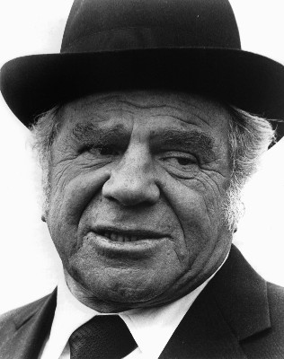 Lionel Stander als Barman
- 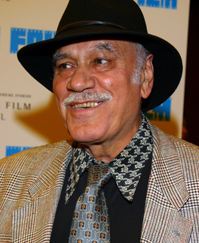 Aldo Sambrell als Cheyenne's Lieutenant , uncredited
- Fabio Testi als Member of Frank's Gang with Black Hat at Auction , uncredited
- Paolo Stoppa als Sam
- 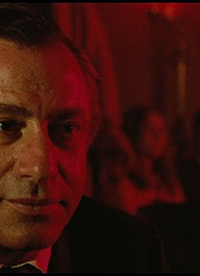 Frank Wolff als Brett McBain
- 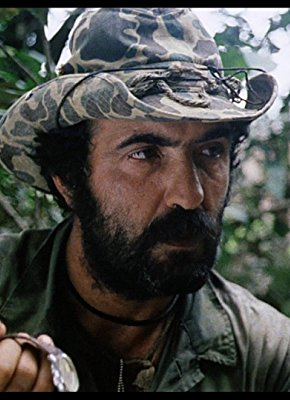 Salvatore Basile als Member of Cheyenne's Gang , uncredited
- Aldo Berti als Member of Frank's Gang Playing Poker , uncredited
 Frank Braña als Member of Frank's Gang Smoking Pipe at Auction , uncredited
Frank Braña als Member of Frank's Gang Smoking Pipe at Auction , uncredited- Marilù Carteny als Mourner at Brett McBain's Funeral , uncredited
- Saturno Cerra als Member of Frank's Gang on Train , uncredited
- Luigi Ciavarro als Older Sheriff's Deputy , uncredited
- Spartaco Conversi als Member of Frank's Gang Shot Through Boot , uncredited
- 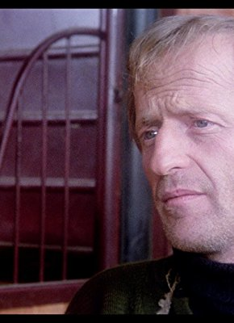 Bruno Corazzari als 3rd Member of Cheyenne's Gang , uncredited
- Paolo Figlia als Member of Frank's Gang , uncredited
- John Frederick als Jim - Member of Frank's Gang , uncredited
- Don Galloway als Member of Frank's Gang in Flashback , uncredited
- Michael Harvey als Frank's Lieutenant , uncredited
- 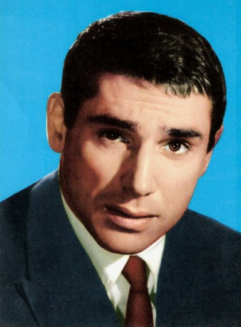 Robert Hossein als Member of Frank's Gang in Flashback , uncredited
- Stefano Imparato als Patrick McBain , uncredited
- Francesca Leone als Girl at Flagstone Station , uncredited
- Raffaella Leone als Girl at Flagstone Station , uncredited
- Frank Leslie als Member of Frank's Gang in Flashback , uncredited
- Luigi Magnani als Unconfirmed Role , uncredited
- Claudio Mancini als Harmonica's Brother , uncredited
- Dino Mele als Harmonica as a Boy , uncredited
 Antonio Molino Rojo als Member of Frank's Gang at Auction , uncredited
Antonio Molino Rojo als Member of Frank's Gang at Auction , uncredited- Enrico Morsella als Member of Frank's Gang in Flashback , uncredited
- Umberto Morsella als Member of Frank's Gang in Flashback , uncredited
- Al Mulock als Knuckles - Member of Frank's Gang , uncredited
- 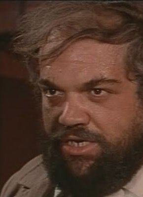 Ricardo Palacios als Morton's Train Conductor , uncredited
- Tullio Palmieri als Flagstone Carpenter , uncredited
- Antonio Palombi als Cattle Corner Station Agent , uncredited
- Renato Pinciroli als First Bidder at Auction , uncredited
- Lorenzo Robledo als 2nd Member of Cheyenne's Gang , uncredited
- Sandra Salvatori als Mourner at Brett McBain's Funeral , uncredited
- 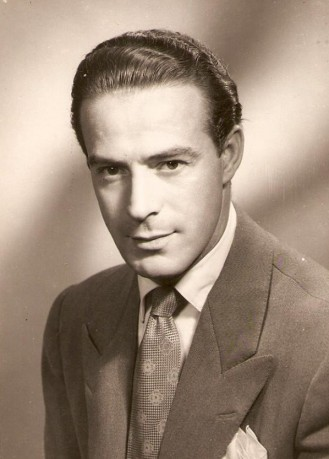 Conrado San Martín als Vecino , uncredited
- Enzo Santaniello als Timmy McBain , uncredited
- Simonetta Santaniello als Maureen McBain , uncredited
- Claudio Scarchilli als Member of Frank's Gang , uncredited
- Giovanni Ivan Scratuglia als Unconfirmed Role , uncredited
- Robert Spafford als Construction Yard Owner , uncredited
- Benito Stefanelli als Frank's Lieutenant , uncredited
Datei: X:\HD-Western-1960-1979\Spiel mir das Lied vom Tod (1968, FSK16, 1920x816).mkv seit 10.11.2015
Festplatte: HD Eastern+Western
 Es gibt insgesamt 110 Filme in der Gruppe 'HD-Western-1960-1979'
Es gibt insgesamt 110 Filme in der Gruppe 'HD-Western-1960-1979'